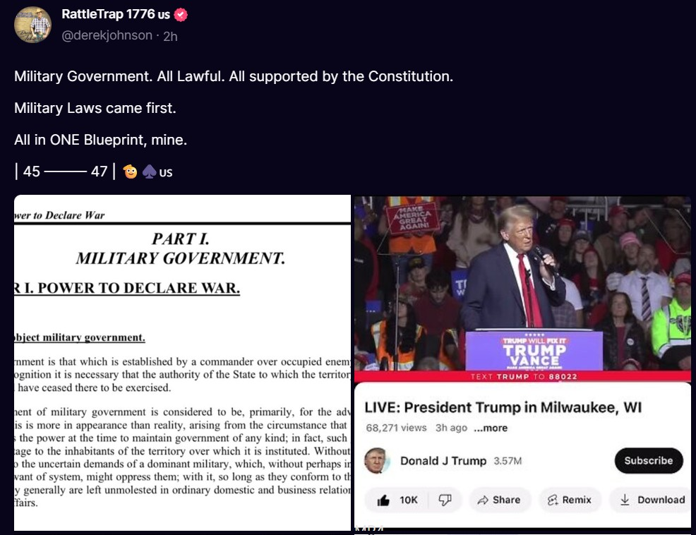
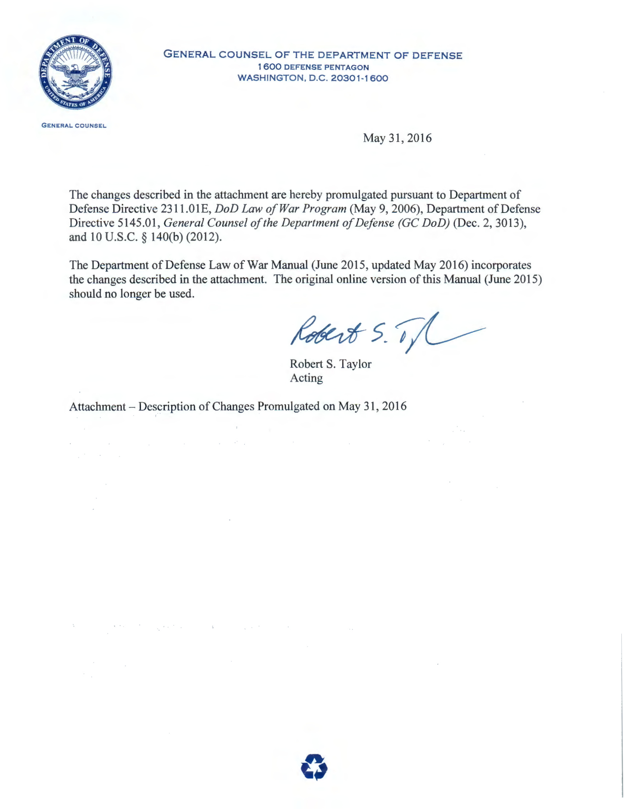
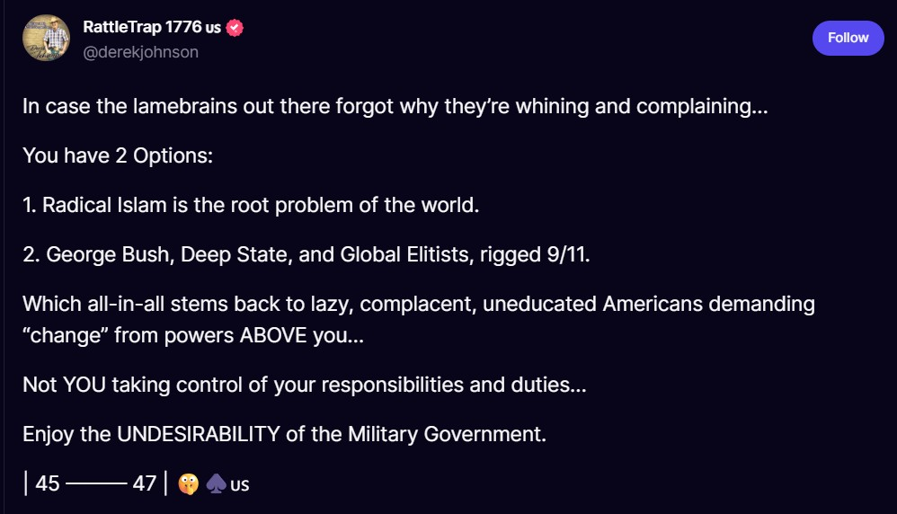
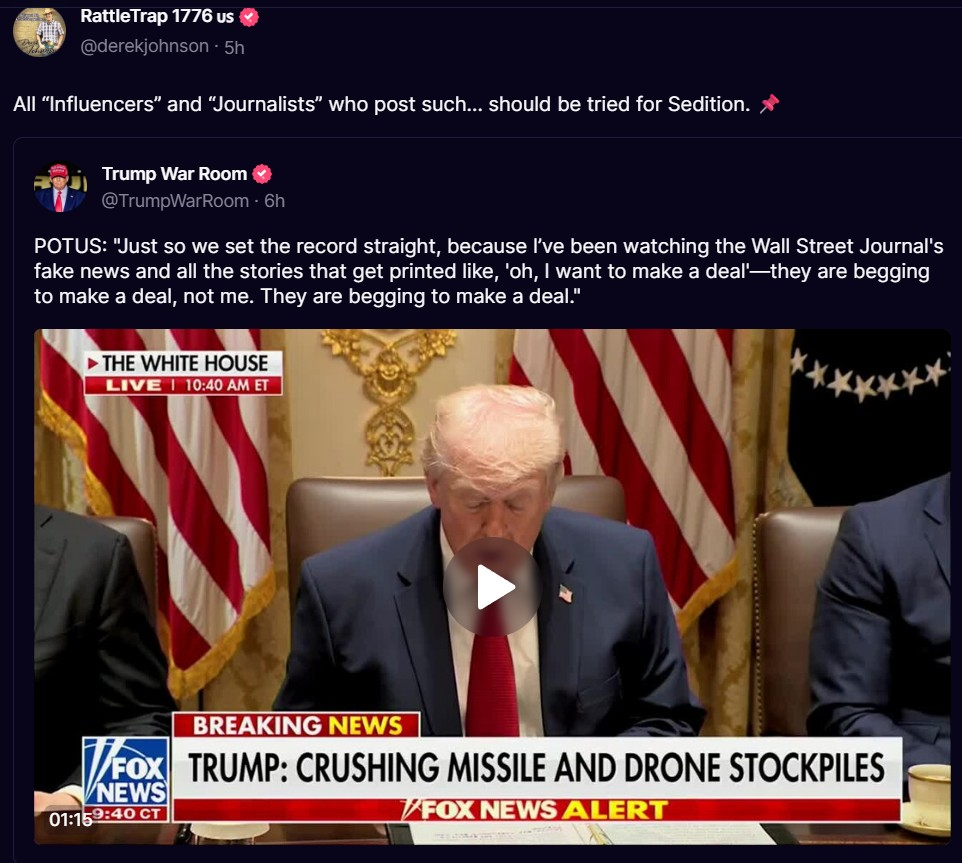
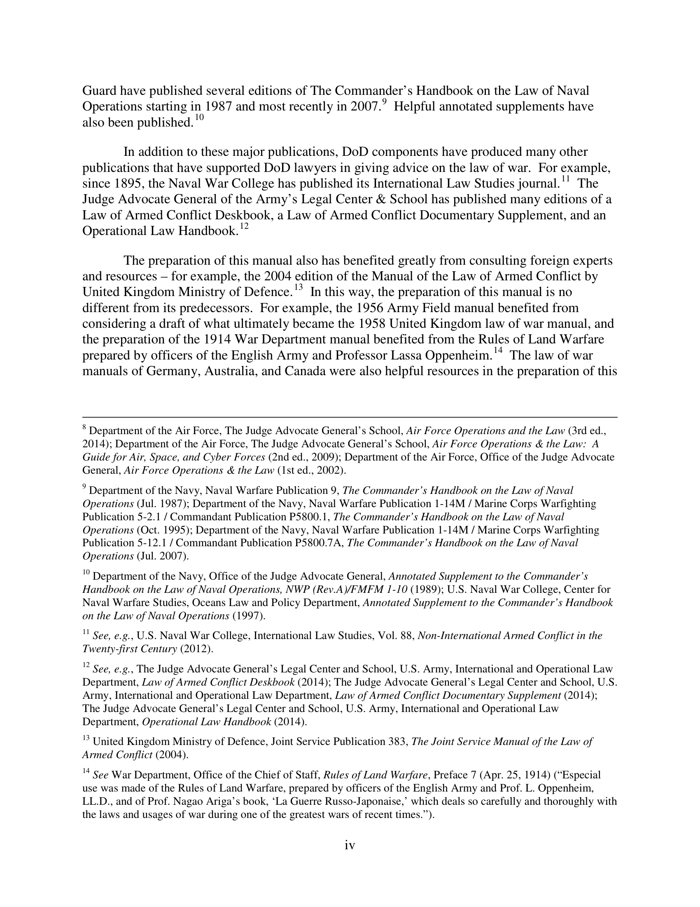
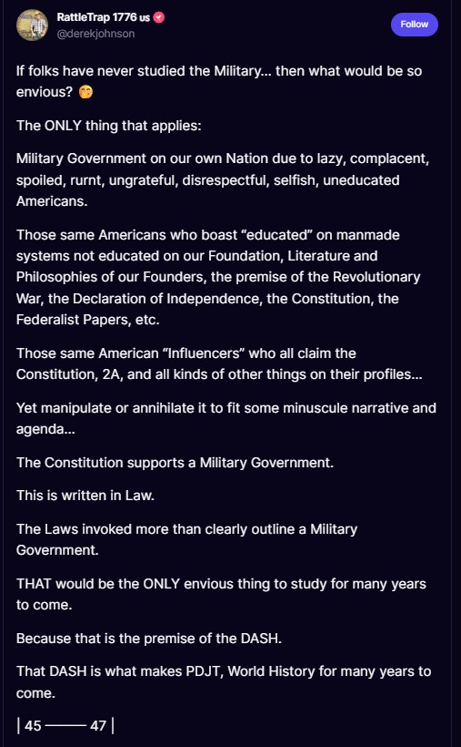

In This Chapter
- Who is Derek Johnson?
- His Actual Military Record
- The Military Justice Act of 2016
- The Department of Defense Law of War Manual
- Fact Checking His Claims
- Derek Johnson's Own Contradictions
- Continuity of Government
- How Derek Johnson Stole His Entire Framework
- Straight From His Feed: March 2026
Be sure to also visit the sub-sections:
Who is Derek Johnson?
Derek Johnson, also known as RattleTrap 1776, is a man who went to Basic Training, went to Advanced Individual Training, got injured, went home, and then decided he was qualified to interpret the entire legal framework of the United States military. That is not a simplification. That is literally what happened.
He burst onto the scene around January 2022, waving the Military Justice Act of 2016 and the Law of War Manual around like a kid who found his dad's briefcase and decided he was a lawyer. His big claim: these two documents "prove" that President Trump is secretly still in charge and the military is running the country behind the scenes. He calls this his "blueprint." Everyone who has actually worked in continuity of government calls it something else.
To put this in perspective, imagine someone who took a first aid course at the YMCA showing up to a hospital and telling the surgeons they have been performing heart surgery wrong. That is Derek Johnson explaining military law to people who have spent decades working in it.
Credentials: Who Should You Trust?
This Site's Author
- 11 years U.S. Army, Staff Sergeant (E-6)
- Master's in Emergency Management (Trident University)
- FEMA Continuity Excellence Series Level I (certified)
- FEMA Level II coursework complete
- Professional knowledge of COOP, COG, ECG, NRF, NIMS, ICS
- Welcomes scrutiny and debate
- Provides all sources free
Derek Johnson
- E-4 Specialist, National Guard (14S MOS)
- 21 months of service (BCT + AIT + injury)
- No EM training, no legal education
- No Top Secret clearance
- No knowledge of COGCON procedures
- Blocks anyone who questions him
- Charges for content
Johnson loves to throw around military jargon like confetti at a parade. Executive Orders. DoD Directives. UCMJ articles. Continuity of Government protocols. He talks like a man who spent thirty years in the Pentagon. He did not spend thirty years in the Pentagon. He did not spend thirty months in the Pentagon. He has never been to the Pentagon.
So what did he actually do?
Derek Johnson's Actual Military Record
Brace yourself. This is going to be shorter than you expect:
| Category | The Facts |
|---|---|
| Rank | Specialist (E-4), junior enlisted, 4th out of 9 enlisted ranks. Not leadership. |
| Total Active Service | 1 year, 9 months, and 3 days |
| Specialty | Air and missile defense, a technical role with nothing to do with law or governance |
| Discharge | Medical retirement, before reaching his 2-year mark |
| Legal Training | None |
| Constitutional Education | None |
| Command Experience | None |
| Intelligence Experience | None |
What Does 14S Actually Mean?
Johnson's MOS (Military Occupational Specialty) was 14S, Air and Missile Defense Crewmember. Here's what most people don't know about this:
The Security Clearance Problem
This is where Derek Johnson's entire framework collapses. He claims to have insider knowledge of Continuity of Government (COG) protocols. But here's the thing:
Let that sink in. The man who has built his entire brand on interpreting classified military continuity protocols never had the security clearance to access them.
What His Service Actually Looked Like
Basic Combat Training (BCT)
Standard 10-week basic training. Every soldier does this. No legal training. No constitutional education. No exposure to COG.
Advanced Individual Training (AIT), 14S
Training specific to air and missile defense systems. Technical equipment operation. Nothing to do with law, governance, executive orders, or continuity of government.
Injury & Medical Separation
Before reaching his 2-year mark, before ever serving at his unit in an operational capacity. Total active time: 21 months, most of which was training.
What Does E-4 Mean?
E-4 (Specialist) is the fourth enlisted rank out of nine. It represents a junior technical position with no leadership authority. An E-4:
- Does not command other soldiers
- Does not set policy
- Does not participate in strategic planning
- Does not have access to classified continuity of government protocols
- Does not receive training in constitutional law or presidential authority
- Does not interact with the legal frameworks Johnson claims to interpret
The Oath He Took and What He's Doing Now
Here's what makes this truly sickening for any veteran.
Derek Johnson is a medically retired service member. That means he took the same oath every one of us took:
"I do solemnly swear that I will support and defend the Constitution of the United States against all enemies, foreign and domestic..."
And what is he doing with his veteran status? He's using it as a credential to promote theories that describe the military overthrow of the civilian government. He's telling millions of followers that the Constitution has been effectively suspended, that a former president secretly controls the military outside constitutional processes, and that the legitimate transfer of power didn't really happen.
That is the opposite of defending the Constitution. That is promoting its overthrow.
His 21 months as an E-4 air defense specialist represent service to his country. But they provide zero qualification for his constitutional theories. His documents should be evaluated not as military expertise but as the unqualified speculation they actually represent.
The Military Justice Act of 2016
The Military Justice Act refers to the United States Military Justice System and the legislative framework governing military justice in the U.S. The Military Justice Act of 2016, which took effect January 2019, introduced reforms and updates to the Uniform Code of Military Justice (UCMJ), which is the foundation of military law in the United States.
What the Act actually did:
- Modernized and streamlined the military justice system with new provisions related to investigations, court-martial procedures, and sentencing
- Increased rights and protections for victims of military crimes, including sexual assault and domestic violence
- Eliminated some offenses from the UCMJ and created new ones to address contemporary issues like cybercrimes
- Introduced changes to sentencing guidelines and appellate review processes
- Enhanced the role of military judges in pre-trial proceedings
The Department of Defense Law of War Manual
The DoD Law of War Manual is a 1,204-page document written by military lawyers from every branch of service, reviewed by the Department of State and Department of Justice, and signed by the General Counsel of the Department of Defense. It is the most comprehensive U.S. military legal document ever published.
And its own foreword tells you exactly what it's about, and it has nothing to do with domestic governance:
"The law of war is part of who we are. George Washington, as Commander in Chief of the Continental Army, agreed with his British adversary that the Revolutionary War would be 'carried on agreeable to the rules which humanity formed.'" (Stephen W. Preston, General Counsel of the Department of Defense, Law of War Manual Foreword)
The foreword traces the manual's history from George Washington through the Civil War's Lieber Code, through WWII military tribunals, to the present. Every single example is about armed conflict with foreign adversaries. Not one word about domestic governance, suspended constitutions, or secret military takeovers.
The manual was prepared by the DoD Law of War Working Group, with representatives from every Military Service's Judge Advocate General, chaired by the DoD General Counsel. It was also reviewed by military lawyers from the UK, Australia, Canada, and New Zealand. This is not one man's interpretation on a website. This is the institutional position of the entire Department of Defense.
The manual itself includes these disclaimers, direct quotes from the document he claims to be an expert on:
"This manual is not intended to, and does not, create any right or benefit, substantive or procedural, enforceable at law or in equity against the United States, its departments, agencies, or other entities, its officers or employees, or any other person."
"This manual is not a definitive explanation of all law of war issues."
"This manual focuses on jus in bello, meaning law relating to the conduct of hostilities and the protection of war victims."
"This manual is not a substitute for the careful practice of law."
Trump's Own National Security Strategy Contradicts DJ
Here's the ultimate irony: Trump's own published National Security Strategy (December 2017) describes how national security works, and it looks nothing like what Derek Johnson claims.
Trump's NSS describes a strategy built on four pillars: protecting the homeland, promoting prosperity, preserving peace through strength, and advancing American influence. It discusses cybersecurity, resilience, and defense, all through normal government channels, Congressional oversight, and institutional processes. Not one word about secret military operations, suspended constitutions, or martial law.
"We are making historic investments in the United States military. We are enforcing our borders, building trade relationships based on fairness and reciprocity, and defending America's sovereignty without apology." (President Donald J. Trump, National Security Strategy, December 2017)
Fact Checking Derek Johnson's Claims
Derek Johnson's website, 1776 Nation, features a comprehensive list of information, accompanied by an encouragement for visitors to fact-check the content provided. We took him up on that offer.
Several Government Employees, Veterans, and Active Duty personnel have reviewed his claims and provided numerous examples proving his main points to be inaccurate. Here are the main arguments we address with factual information using verified sources and decades of experience, knowledge, and training:
| Derek Johnson Claims | The Verified Facts |
|---|---|
| The U.S. is in a Continuity of Government | COG plans exist for emergencies but are not currently "activated" in the way Johnson describes. See Chapter 6 for full details. |
| The National Guard has only been federalized by President Trump | National Guard federalization has happened under many presidents for disasters, civil unrest, and emergencies. See National Guard page. |
| The Secretary of Defense delegated authority proves a military operation | Authority delegation is standard administrative procedure in any large organization. The DoD has published directives on this since its inception. |
| The Law of War Manual applies to current domestic operations | The Manual governs conduct during wartime with foreign adversaries. It does not authorize domestic military occupation. |
| Executive orders contain hidden instructions for military takeover | The cited EOs update existing continuity frameworks maintained across all administrations. Read EO 13848 yourself. |
On page 24 of his materials, Johnson references 50 United States Code 34, directing to Chapter 2, Section 1622 about the termination of declared national emergencies. According to the legal framework, a national emergency can be terminated through two avenues:
- A joint resolution passed by Congress discontinuing the emergency
- The President issuing a proclamation officially terminating the emergency
Additionally, the President is required to transmit to Congress an annual notice of intent to continue any existing national emergencies. What Johnson fails to explain is that these are routine administrative processes that have been used across every modern presidency. They are not evidence of a secret military operation.
What the Actual DoD Continuity Directive Says
Derek Johnson claims to interpret DoD directives. Here's what DoD Directive 3020.26, the actual DoD continuity policy, states on page 1:
"Comprehensive and effective continuity capabilities will be maintained within the DoD to ensure the uninterrupted execution of mission-essential functions (MEFs) and support continuity of operations (COOP), continuity of government (COG), and enduring constitutional government (ECG)."
The directive designates the Under Secretary of Defense for Policy as the DoD Continuity Coordinator under PPD-40. This is a civilian position, not a military commander. The entire framework operates under civilian oversight within the constitutional chain of command. There is nothing in this directive about military takeover, secret operations, or transferring authority outside constitutional processes.
The USNORTHCOM CONPLAN 2501-05 for Defense Support of Civil Authorities is explicitly UNCLASSIFIED, meaning it's not secret, and describes military support to civilian authorities, not military replacement of civilian authorities. Read it yourself (PDF).
Derek Johnson's Own Contradictions
When you look at Johnson's own statements side by side, contradictions emerge that undermine his entire framework. Since he encourages fact-checking, let's take him at his word:
Continuity of Government: The Real Story
Johnson's claims about Continuity of Government (COG) represent perhaps the most dangerous misunderstanding in his framework. He portrays COG as evidence of a secret military operation, when in reality it's a well-documented, publicly available set of emergency preparedness plans.
For the complete breakdown of what COG actually is, how it works, and why it disproves the devolution and law of war theories, see Chapter 6: Continuity of Government, the most comprehensive chapter on this site.
Source Documents
Don't take our word for it. Read the actual documents Johnson cites and compare them to his claims:
📄Additional Sources
- National Emergencies Act, 50 U.S.C. §§ 1601-1651 (1976)
- Military Justice Act of 2016, Pub. L. 114-328
- Marbury v. Madison, 5 U.S. (1 Cranch) 137 (1803)
- Department of Defense Law of War Manual (June 2015, updated Dec 2016)
- Uniform Code of Military Justice, 10 U.S.C. §§ 801-946 (1950)
- thedocuments.info (Derek Johnson's website, the claims being examined)
Further Reading: The Ghost's Substack
The Ghost's Substack has published an extensive investigative series on Derek Johnson. All articles are sourced and documented. We credit The Ghost for their thorough research:
🔍How the Law of War Manual Is Actually Used
Derek Johnson claims the Law of War Manual is a "blueprint" for military control of domestic governance. The reality is that the Manual is being applied right now, in March 2026, to actual military operations against Iran. This is what the Manual was designed for. This is how it has always been used. And it has nothing to do with controlling American citizens.
Iran (2026): Real-Time Application
On February 28, 2026, the United States and Israel launched Operation Epic Fury against Iran. The Law of War Manual is the governing document for how these operations are conducted. Legal scholars at Just Security have published detailed analyses showing exactly how the Manual applies: who can be targeted (Section 5.7.4 covers leaders with operational command of armed forces), what constitutes a legitimate military objective, and how the principles of distinction and proportionality must be followed.
When Defense Secretary Hegseth stated there would be "no stupid rules of engagement," Military.com explained that ROE are a formal control system that ties tactical force decisions to strategy, law, and escalation management. They define who can be targeted, what "positive identification" and "hostile intent" mean, and what steps troops must take before escalating force. No competent military operates without ROE because U.S. forces remain bound by the law of armed conflict, including distinction and proportionality. This is what the Law of War Manual governs. Not domestic politics.
Naval warfare experts have explained how the Manual applies to operations in the Strait of Hormuz and Persian Gulf, including rules on targeting at sea, which is primarily "platform-based" rather than person-based. The Human Rights Watch (March 26, 2026) is monitoring all parties for compliance with the laws of war. This is the real-world application of the document Derek Johnson claims is about martial law in America.
DoD Directive 2311.01: The Law of War Program
DoD Directive 2311.01 establishes the entire DoD Law of War Program. It requires all DoD personnel to comply with the law of war during all armed conflicts and in all other military operations. It designates the DoD General Counsel as the authority for law of war policy and establishes the DoD Law of War Working Group. This is the administrative framework that makes the Manual operational. It is a compliance program, not a secret government. Derek Johnson has never referenced this directive because it destroys his narrative by showing the Manual is an institutional compliance document managed by lawyers, not a military takeover blueprint.
Iraq and Afghanistan: Historical Application
The Law of War Manual and its predecessors governed every aspect of U.S. military operations in Iraq and Afghanistan. When the conflict in Iraq transitioned from an international armed conflict (IAC) to a non-international armed conflict (NIAC), the legal framework shifted from the full Geneva Conventions to Common Article 3. The Supreme Court confirmed this in Hamdan v. Rumsfeld (2006), ruling that Common Article 3 applies to detainees in the War on Terror. Congress responded with the Military Commissions Act of 2006. These are the real legal battles fought using the Law of War framework. Not one of them involved domestic governance, martial law, or secret military government.
In Afghanistan, the Manual governed targeting decisions, treatment of prisoners, rules of engagement for patrols, and the legal basis for drone strikes. In Iraq, it governed the occupation framework, treatment of detainees at Abu Ghraib (where violations of the Manual led to prosecutions), and the transition to Iraqi sovereignty. Every Judge Advocate General who served in these conflicts used the Manual as their primary reference. None of them interpreted it as a blueprint for military control of American civilians because that is not what it is.
How Derek Johnson Stole His Entire Framework
Derek Johnson did not originate any of the theories he sells as his own. Every pillar of his so-called blueprint was borrowed, repackaged, and monetized from sources that were already publicly available or already circulating in online communities before he ever appeared on the scene.
The foundational concept behind DJ's framework is "devolution," the idea that President Trump secretly transferred power to the military before leaving office. That theory was not invented by Derek Johnson. It was created by Jon Herold, who writes under the name Patel Patriot. Herold published "Devolution Part 1" on his Substack in July 2021, months before Derek Johnson appeared on social media claiming to have cracked a secret military code. DJ took the core devolution concept and evolved it into his "Law of War" and "Continuity of Government" framework, but the seed idea was always Herold's.
The Department of Defense Law of War Manual, which DJ treats as though he unearthed a classified document, has been publicly available on the DoD website since June 2015. It was updated in December 2016. Anyone with an internet connection could download and read it. DJ did not discover it. He simply began reading selected passages out of context, stripping away the manual's actual purpose of governing the conduct of armed conflict and the treatment of war victims, and reinterpreting those passages as though they described a secret domestic military operation. The manual's own foreword makes clear what it covers. DJ ignores that foreword entirely.
Continuity of Government, or COG, is not a secret either. FEMA has maintained COG planning documentation since the Cold War era. The concept exists to ensure that essential government functions continue during catastrophic emergencies such as nuclear attack or large-scale natural disasters. COG plans are taught in FEMA's professional development courses and referenced in publicly available Presidential Decision Directives. DJ did not discover COG. He took a well-documented emergency management framework and recast it as evidence of a covert military presidency.
What DJ actually did was take three existing things and mash them together. He took devolution from Jon Herold, the Law of War Manual from the DoD's public website, and COG planning from FEMA's institutional knowledge base. He combined them into a single narrative, called it his "blueprint," and then sold books claiming it was his original discovery. None of it was original. All of it was publicly available before he ever made his first post.
Even the symbolic elements DJ uses are not his own. The "45-47" concept, suggesting that Trump is simultaneously the 45th and future 47th president, and the "DASH" idea, referring to the dash between those numbers as a period of hidden continuity, were both circulating in Q and Anon-adjacent communities before DJ adopted them. He did not coin these ideas. He absorbed them from the same online ecosystem and presented them as though they were part of his unique insight.
This is a recognizable pattern. Take publicly available information. Strip it of its proper context. Reinterpret it through a conspiracy lens. Claim it as your own original work. Then monetize it through books, merchandise, and speaking engagements. It is not research. It is not analysis. It is repackaging. And the people who pay for DJ's books and products deserve to know that everything he sells them was freely available long before he put his name on it.
In His Own Words: Watch Him Say It
Do not take our word for it. Watch Derek Johnson explain his theory in his own words. Notice the confidence. Notice the lack of sources. Notice that a 14S National Guard soldier with 21 months of service and no Top Secret clearance is telling you that the United States is under military government.
"Department of Defense Directives" by Derek Johnson, December 8, 2024. Watch a 14S National Guard soldier with no Top Secret clearance explain documents he does not have the training or authorization to interpret.
The 3-Cannon Salute: DJ's Biggest (and Funniest) Fixation
If you want to understand how Derek Johnson's mind works, look no further than the 3-cannon salute. This is his Rosetta Stone. His magnum opus. The hill he will apparently die on forever.
Here is the claim: Biden's inauguration was fake because he only received a "3-cannon salute" instead of a proper 21-gun salute. Johnson claims that three cannons firing at Arlington National Cemetery on January 20, 2021 represented Military Funeral Honors, not a presidential inauguration. Therefore, the military does not recognize Biden as president. Case closed. Pack it up. The Republic is saved because Derek counted some cannons.
There is just one problem. Actually, there are several.
This claim reveals that Derek Johnson does not understand basic military ceremonial protocol.
Biden received only 3 cannons at Arlington. A real president gets 4 cannons and a 21-gun salute. Three cannons means military funeral honors, proving Biden's inauguration was fake.
A 21-gun salute uses artillery (cannons), not rifles. The standard protocol is three cannons firing seven rounds each, totaling 21 shots. Three cannons IS the 21-gun salute. It is not a funeral. Johnson is confusing the 21-gun salute with the three-rifle volley, which is a completely different ceremony performed at military funerals where seven riflemen fire three volleys. These are two entirely separate protocols that Johnson has merged in his mind and then presented to 110,000 followers as proof of a fake inauguration.
NBC, NBC San Diego, and NECN all reported that the Army's 3rd United States Infantry Regiment fired cannons for the traditional 21-gun salute at Arlington National Cemetery to mark Biden's inauguration. The Presidential Salute Battery performed the ceremony exactly as it has for every modern inauguration. There was nothing unusual about it. Johnson either does not understand the difference between a gun salute and a rifle volley, or he understands it and is deliberately misleading his audience. Either way, this is the claim he has built a significant portion of his brand around, and it is factually wrong.
Straight From His Own Feed: March 2026
Derek Johnson remains active on Truth Social (@derekjohnson) as of March 2026 with 110,000 followers. Here is what he is currently posting and why it is wrong.


The DoD Law of War Manual foreword, written by the General Counsel of the Department of Defense, states explicitly that this manual covers the law of war as it relates to armed conflict and the protection of war victims. The screenshot DJ shares about "MILITARY GOVERNMENT" is from sections about occupation of foreign territory during wartime. The Hague Regulations Article 42 defines occupied territory as being "under the authority of a hostile army." The U.S. military is not a hostile army on American soil. The Posse Comitatus Act (18 U.S.C. 1385) explicitly prohibits the use of federal military forces for domestic law enforcement.

Johnson presents a false binary: either "Radical Islam" or "Deep State rigged 9/11." He then calls Americans "lazy, complacent, uneducated" for not agreeing with him, and tells them to "Enjoy the UNDESIRABILITY of the Military Government." This is a man with 21 months of National Guard service, no Top Secret clearance, and no operational experience telling 110,000 followers that a military government is running the country and they should accept it. The Constitution he claims to champion establishes civilian control of the military in Article II, Section 2.


The Law of War Manual that Derek Johnson cites contains its own disclaimer: "This manual is not intended to, and does not, create any right or benefit, substantive or procedural, enforceable at law or in equity against the United States." It explicitly states its scope is "jus in bello," meaning the law relating to conduct of hostilities and protection of war victims. Not domestic governance. Not military occupation of America. Johnson calls for sedition charges against journalists while he himself advocates replacing civilian government with military rule. The First Amendment protects free speech. Sedition under 18 U.S.C. 2384 requires conspiring to overthrow the government by force. If anyone's rhetoric meets that standard, it is Johnson's.

Johnson calls Americans "lazy, complacent, spoiled, rurnt, ungrateful, disrespectful, selfish, uneducated" and claims the Constitution "supports a Military Government" that is "written in Law." It is not. The Constitution establishes three branches of civilian government. Article I creates Congress. Article II creates a civilian President who serves as Commander in Chief precisely to ensure civilian control over the military. Article III creates the judiciary. Nowhere does the Constitution establish, authorize, or support military government over the American people. Johnson's claim that "DASH is what makes PDJT, World History for many years to come" is unsupported by any legal framework, executive order, or military regulation in existence.